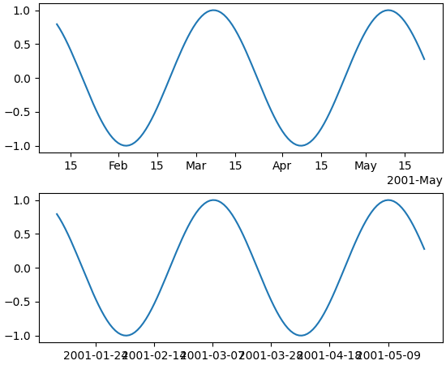

New rcParams for dates: set converter and whether to use interval_multiples¶
The new rcParams["date.converter"] (default: None) allows toggling between
matplotlib.dates.DateConverter and matplotlib.dates.ConciseDateConverter
using the strings 'auto' and 'concise' respectively.
The new rcParams["date.interval_multiples"] (default: None) allows toggling between the dates
locator trying to pick ticks at set intervals (i.e. day 1 and 15 of the
month), versus evenly spaced ticks that start where ever the
timeseries starts:
import matplotlib.pyplot as plt
import numpy as np
dates = np.arange('2001-01-10', '2001-05-23', dtype='datetime64[D]')
y = np.sin(dates.astype(float) / 10)
fig, axs = plt.subplots(nrows=2, constrained_layout=True)
plt.rcParams['date.converter'] = 'concise'
plt.rcParams['date.interval_multiples'] = True
ax = axs[0]
ax.plot(dates, y)
plt.rcParams['date.converter'] = 'auto'
plt.rcParams['date.interval_multiples'] = False
ax = axs[1]
ax.plot(dates, y)
(Source code, png, pdf)
{kind=link}
